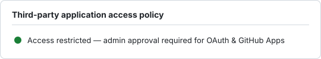

Third-party application access is restricted: the org requires admin approval and
members cannot install OAuth/GitHub apps freely. OAuth App access policy is
enabled (approval required).
gh api "/orgs/cla-org" --jq '.members_can_create_oauth_app_tokens'